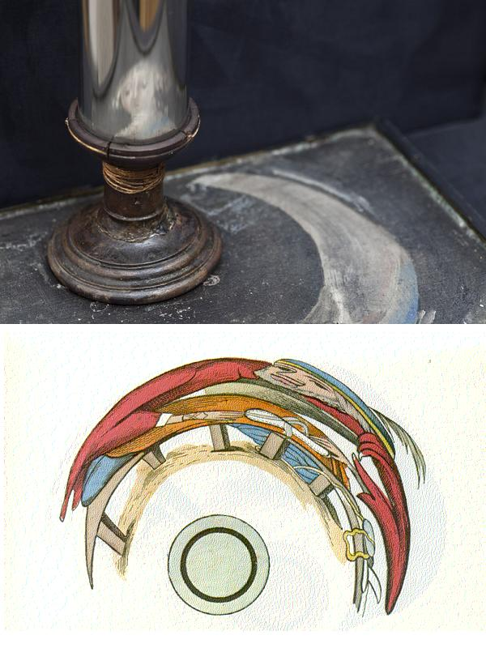

The Blackbird
A disguised Jacobite song
***********
Melody 1 (Irish dancing air)
Melody 2 (Harp and flute)
Melody 3 (A singing air)
Melody 3 from Hogg's "Jacobite Reliques", part II ,N°33Sheet music - Partition : Melody 1
{kind=link}
To the Irish tune (sound background to this page):
According to the Irish musicologist Chevalier William Henry Grattan Flood
(1858 - 1928) reference to this song is found as early as 1709. It was first
printed by the Scottish poet (and wig-maker! and father of the homonymous
painter) Allan Ramsay (1686-1758) in 1724 in his "Tea Table Miscellany"
(song allegedly taken down from an Irishman who took part in the 1715 revolt).
Other sources date the song to 1651 when a broadside titled "The Ladie’s
Lamentation for the losse of her Land-lord" was published by a named
Richard Burton, so that the "Blackbird" could refer to all Stuarts,
starting from Charles II, ending with Bonnie Prince Charlie.
Tunes sequenced by Ch.Souchon
Hogg Version: James Francis Stuart

| The Blackbird | Le merle |
|---|---|
|
1. Once on a morning of sweet recreation,
2. "I will go. a stranger, to peril and danger,
3. "The birds of the forest are all met together, |
1. C'est par un beau matin, lors d'une promenade. Que j'entendis une gente dame chanter Un chant entrecoupé de sanglots lamentables: "Mon beau merle, à jamais, hélas, s'est envolé! C'était mon seul trésor, ma joie, mon allégresse. Mon coeur, aimable oiseau, veut te suivre à bon droit; Et j'ai donc décidé de braver les averses, Et de te rechercher, mon merle, où que tu sois.
2. "J'irai, moi l'étrangère au milieu des périls,
3. "La forêt réunit des espèces diverses, Trad. Ch Souchon(c)2004 |
Broadside: Prince Charles Stuart
| The Blackbird | Le merle |
|---|---|
|
1. Upon a fair morning
for soft recreation, |
1. C'est par un beau matin,
lors d'une promenade, Que j'entendis une gente dame chanter Un chant entrecoupé de sanglots lamentables: "Mon beau merle royal, hélas, s'est envolé! S’égarent mes pensées, la réflexion me peine; Ma détresse m’impose un trop pénible poids. Mais ce n’est point la mort vers quoi l’amour m’entraîne: Je te rechercherai, mon Merle, où que tu sois. 2. "Jadis mon Merle était heureux en Angleterre, Ce pays dont il fut le plus bel ornement. Des dames de la cour l’ont élevé naguère Comme il convient au fils d’un monarque règnant. Mais puisque la Fortune à prolonger l’absence S’entête, la perverse, et t’éloigne de moi, Je veux crier ton nom en Espagne et en France Où j’irai te chercher, mon Merle, où que tu sois. 3. "La forêt réunit des espèces diverses: Colombe et tourterelle ont le même séjour Et j'ai donc décidé de braver les averses, Et, le printemps venu, de chercher mon amour. C'était mon seul trésor, ma joie, mon allégresse. Mon coeur, aimable oiseau, veut te suivre à bon droit; En toi, tout est constance et courage et hardiesse! Tous mes voeux de bonheur, mon merle, où que tu sois! 4. "Ensemble nous sommes partis pour l’Angleterre, Lui montrer ta noblesse et ton cœur généreux. Maudit soit le jour où nos départs s’apprêtèrent… Hélas, tu fus contraint de t’enfuir de ces lieux. Alors que l’Ecossais t’avait en haute estime, L’Anglais feignait de voir un étranger en toi: Quand la France et l’Espagne acclament, unanimes Tes exploits, à jamais, mon merle, où que tu sois! 5. "L’oiseleur aurait-il capturé mon beau merle? Si oui, mon chant en plainte alors va se briser. Mais si ta vie est sauve, en moi l’espoir déferle De te revoir un jour, en juin, peut-être en mai. Pour toi je braverai le feu, la boue, l’ordure J’irai, tant est puissant le culte que l'on doit A la constance même, à la même droiture Et vers toi vont mes vœux, O Merle, où que tu sois! 6. "Ce n’est pas l’océan périlleux qui m’effraie, Ni le danger qui guette un pieux pèlerin; L’accueil que l’on attend des lointaines contrées Vaut bien mieux que celui qu’Albion réserve aux siens. Je prie Dieu qu’Il pardonne à la Grande Bretagne, Malgré ceux qui Lui sont odieux, tout comme à moi. Que la gloire et la joie soient tes chères compagnes, Mon charmant, mon aimable Merle, où que tu sois!" Trad. Ch Souchon(c)2018 |
|
The Blackbird of the song is the exiled James Francis Stewart, known as the "Chevalier de Saint Georges" or "The Old Pretender", whom the Jacobites considered since his father's death in 1701 as King James III -and VIII of Scotland.. To prevent prosecution, the Jacobites used to replace in some songs the name of the Stuart sovereign with a code name. Other instances of this practice are the song "The Bonnie Moorhen"and the song Here's to the King.
 Disguised songs were one way among others of putting a mask upon Jacobitism: portaits of James III painted on a canvas in such a way that they were only visible when mirrored by the surface of a polished steel cylinder erected in the midst; ribbons or garters containing allusive inscriptions or initials; mysterious toasts such as "the King" with one's glass brought across a water jug, meaning "The King over the water" or "the king again", which was a hint at a Restoration.A jacobite alphabet was worked out: "A Blessed Change.D. Every Foreigner Gets Home. James Keeps Loyal Ministers. No Oppressive Parliaments. Quickly Return, Stuarts. Tuck Up Whelps (=Guelps).Xert Your Zeal". Another instance od disguised evocation is the following poem found on the fly-leaf of a book which had belonged to a Jacobite partisan:
"I love with all my heart_______The Tory party here
To appearance this is a long poem of short lines conveying loyalty to the Hanoverian king; in fact it is a short poem in long lines, pronouncing for the Stuarts.
|
Le merle de la chanson est le prince exilé Jacques François Stuart, qu'on appelait le Chevalier de Saint Georges ou le Vieux Prétendant, mais qui était le roi Jacques III d'Angleterre et VIII d'Ecosse, depuis la mort de son père en 1701, selon les Jacobites. Pour se prémunir contre les poursuites, les Jacobites remplaçaient dans certains chants le nom du prince Stuart par un nom de code. Un autre exemple de cette pratique est le chant "The Bonnie Moorhen" ("Une poule d'eau") ainsi que A la santé du Roi.
Les chants "déguisés" étaient un moyen parmi d'autres de masquer son Jacobitisme:
"De tout mon coeur j'ai pris_____Le parti des Tories A première vue, il s'agit d'un poème qui, lu une colonne après l'autre, proclame l'allégeance aux Hanovre. En fait, si on le lit une ligne après l'autre, on s'aperçoit qu'il fait l'éloge des Stuart. |